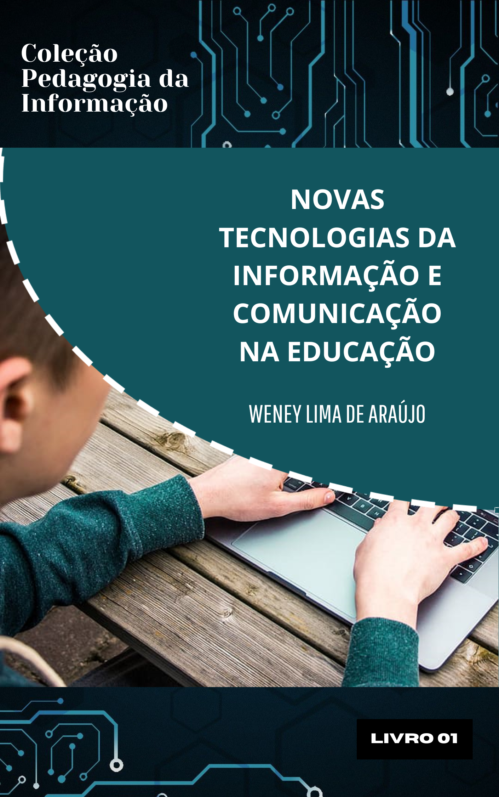

Novas Tecnologias da Informação e Comunicação
O livro Novas Tecnologias da Informação e Comunicação na Educação, de Weney Lima de Araújo, faz uma análise das transformações na educação a partir do uso das Tecnologias da Informação e Comunicação (TICs). A obra explora como essas ferramentas tecnológicas impactam os processos de ensino e aprendizagem, democratizando o acesso ao conhecimento e promovendo novas formas de interação entre professores e estudantes. O autor ressalta que as TICs são fundamentais para acompanhar as mudanças sociais e preparar os educadores e estudantes para um mundo digital, integrando ferramentas como plataformas de ensino, recursos audiovisuais e softwares educacionais.
Ao longo do texto, é abordada a necessidade de formação adequada dos professores para que possam utilizar as TICs de maneira pedagógica e crítica. A capacitação docente é fundamental para aproveitar ao máximo o potencial das tecnologias no processo educativo, promovendo um ensino mais dinâmico, inclusivo e eficiente. Araújo também destaca conceitos como letramento digital e alfabetização tecnológica, essenciais para que estudantes desenvolvam habilidades de uso crítico e responsável das tecnologias no contexto educacional e social.
O autor examina como as TICs atuam como agentes de transformação cultural e social, facilitando a disseminação da arte, da cultura e da informação em escala global. Além disso, apresenta a educação a distância (EaD) como uma das grandes conquistas proporcionadas pelas tecnologias, ampliando o acesso à educação e rompendo barreiras geográficas. Ambientes Virtuais de Aprendizagem (AVAs) e plataformas interativas são destacados como recursos indispensáveis para a personalização e a flexibilidade do aprendizado.
Por fim, o livro enfatiza a importância de utilizar as TICs de forma consciente e sustentável, com práticas que envolvam a reciclagem de resíduos eletrônicos e a preservação do meio ambiente. Araújo defende que a integração das novas tecnologias na educação deve estar alinhada com o desenvolvimento de competências críticas, colaborativas e criativas, capacitando os indivíduos para enfrentar os desafios do mundo contemporâneo.